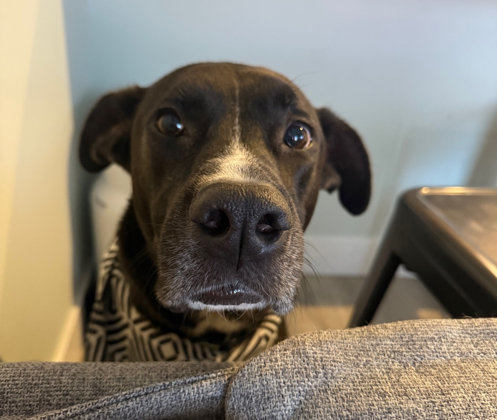
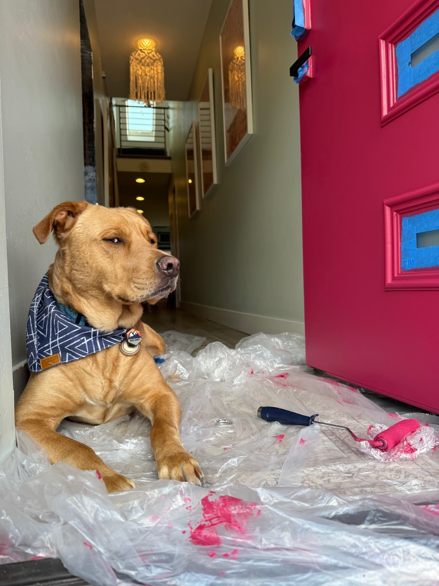
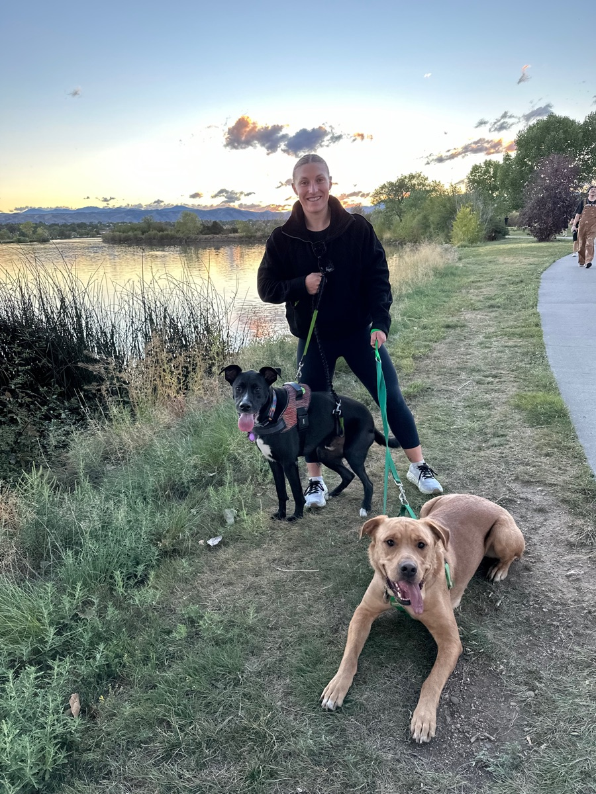

Biomarker Explorer
shiny
htmlwidgets
d3
ux
A cross-study biomarker app with ten custom D3 and Observable Plot htmlwidgets. The live demo runs on invented data.
// Casey Aguilar-Gervase · Data Scientist & R Shiny Specialist
I bridge data science and design. I combine advanced R Shiny development with custom HTML/CSS, UX design, and interactive visualization to turn proof-of-concept apps into production-ready tools people enjoy using.
I’m a contract data scientist and an experienced R Shiny developer based in the Indianapolis area. Before that, I spent several years at Atorus Research as a lead Shiny developer on clinical research apps, taking them from the first wireframes through modular, production-ready code. Alongside the development work, I led projects day to day: working directly with stakeholders and clients, planning and managing timelines, and mentoring the developers on my teams.
My background is a mix that shows up in my work: I studied biostatistics and statistics, with a minor in graphic design, and I’ve spent years writing production code, from clinical programming in R to complex Shiny architecture. I care as much about how an app looks and feels as about how it’s built. Data deserves better than dashboards that feel like chores.
What I work on
// off the clock
Mason and Tony work behind the scenes on every project. They attend all my meetings and sleep through most of them.



// contact